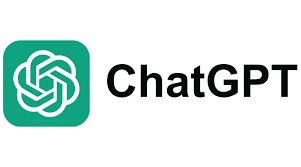

ChatGPT: El Maestro del Lenguaje
Un modelo de inteligencia artificial conversacional desarrollado por **OpenAI**, capaz de generar texto coherente y contextualizado.
Mecanismo de Funcionamiento: El Transformer
ChatGPT se basa en la arquitectura **Transformer**, un tipo de red neuronal que permite al modelo procesar secuencias de datos (como palabras) y dar importancia a las partes más relevantes del texto de entrada. Utiliza el **Aprendizaje No Supervisado** para predecir la siguiente palabra, lo que le confiere su fluidez.
- **Modelo Base:** GPT (Generative Pre-trained Transformer).
- **Ajuste:** Usa el RLHF (Aprendizaje por Refuerzo con Retroalimentación Humana) para mejorar la calidad y seguridad de las respuestas.

Usos Prácticos y Productividad
ChatGPT ha revolucionado la productividad en múltiples campos:
- **Marketing:** Creación de eslóganes, contenido para redes sociales y borradores de artículos.
- **Servicio al Cliente:** Automatización de respuestas comunes a través de chatbots avanzados.
- **Programación:** Generación de snippets de código, explicación de funciones y depuración.
Desafíos y Limitaciones
A pesar de su poder, los modelos de lenguaje tienen limitaciones conocidas:
- **Alucinaciones:** Genera información falsa o inventada con gran confianza.
- **Ventana de Contexto:** Olvida información de conversaciones muy largas.
- **Datos de Entrenamiento:** Su conocimiento está limitado a la fecha de corte de sus datos.